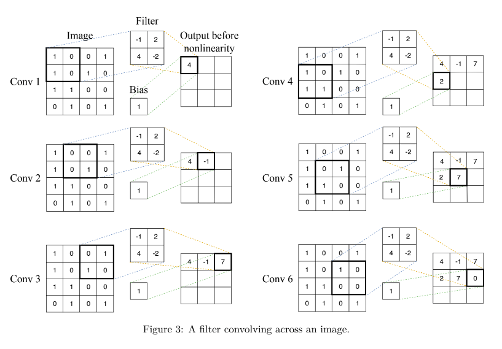

Machine Learning
Chapter 6 - Neural Networks and Deep Learning
Neural Networks
-
A standard unit: Logistic regression / a generalized multiclass classification (the softmax regression model)
-
Nested function
-
A 3 layer NNW
-
Functions f1 f2…
: vector functions
-
W = a matrix
-
b = a vector
-
Learned with gradient descent and
a particular cost function
-
Function f3: scalar function for the regression task
-
Function g:
the activation function
-
Fixed
-
Usually non-linear
-
Chosen by analysts
-
Example: a multilayer perceptron - vanilla neural network
-
If the rightmost activation function g is linear
-
the neural network is a regression model.
-
the neural network is a binary classification model.
-
Function g has to be differentiable for gradient descent
-
Popular choices of g:

Deep Learning
-
Training NNW with more than two non-output layers.
-
Previous problems
-
Gradient clipping
-
L1 L2 Regularization
-
Prevents parameters from changing values
-
Might stop the NNW from further training
-
ReLU (Rectified Linear Units)
-
LSTM (Long Short Term Memory)
-
Skip connections used in residual NNWs.
-
When the data dimension becomes high, it might be hard to optimize if using multilayer perceptron.
-
significantly reduces the number of parameters
-
Applications
-
Learn video games
-
Learn cooking
-
Also other 2D or 3D array inputs
-
Sound (timestamp vs. pitch etc)
-
Text (position in sentence vs. words in dictionary)
-
Takes in a 2 dimensional array of pixels (can be 3D)
-
Things to consider: rotation, stretch, weight
-
One image becomes a stack of filtered images
-
Match parts of images
-
Math behind to find where a feature occurs -
filtering
:
-
Line up the feature and the image patch
-
Multiply each image pixel by the corresponding feature pixel
-
Add them up
-
Divide by the total number of pixels in the feature

-
Pooling - Shrinking the image stack
-
Pick a window size / padding (usually 2 or 3)
-
Pick a
stride
(usually 2)
-
Walk the window across filtered images
-
From each window, take the maximum value

-
Change negative values to 0
-
How many of each type of layer?
-
In what order?
-
Hyperparameters
-
Only to capture spatial relationships
-
The data must be made to look like an image
-
The scramble of data column and rows will affect the image
-
Sequence to sequence translation
-
Memory functions
-
Gating - sigmoid function